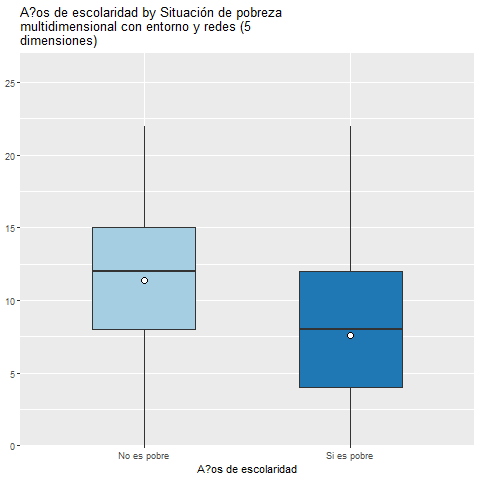

Los años de escolaridad según la pobreza multidimensional, el nivel de escolaridad de la madre y el sexo: un análisis de regresión múltiple
Gabriela Ruz, Fabian Alarcon, Martin Henriquez, Nicolás Gajardo y Gabriela Zenteno.
8/10/2021
Resumen
En la sociedad chilena, la educación constituye un valor muy apreciado por la población, que ve en ella la única forma de progresar en la vida. Por ello, la mayoría de las personas se encuentran dispuestas a realizar grandes esfuerzos para obtener un buen nivel educacional (Oliva 2018). Sin embargo, existen factores vinculados a desigualdades socioeconómicas y demográficas de origen que obstruyen la posibilidad de dedicar más tiempo de vida a los estudios, de obtener un buen desempeño educativo, o de prevenir la deserción o retraso. La presente investigación busca analizar en que medida las variables nivel de escolaridad alcanzado por la madre, sexo y pobreza multidimensional, influyen en los años de escolaridad de las personas, entendiendo que dichas variables proveen información sobre las circunstancias socioeconómicas que caracterizarán la trayectoria educacional. Se elabora un modelo de regresión múltiple a partir de los datos proporcionados por la encuesta CASEN 2017, con una base filtrada de N=51.472 (personas).Los resultados mostraron una relación significativa entre la variable dependiente con todas las demás variables independientes (p<.001). Estar en una situación de pobreza multidimensional disminuye los años de escolaridad del entrevistado/a, y a medida que aumenta el nivel de escolaridad de la madre, aumentan los años de escolaridad. Respecto al sexo, los años de escolaridad disminuyen en un -0.285 en el caso de las mujeres, y en cuanto a edad, disminuirían en un -0,079 a medida que aumenta. Se concluye la relevancia predictiva del modelo, con un R cuadrado ajustado de 0.425.
Palabras clave: “Escolaridad”; Pobreza multidimensional”; “Sexo”; “Regresión múltiple”.
## [1] "/home/juank/github/esco2"1.Introducción
La educación y la adquisición de conocimiento han sido temas prioritarios en las discusiones sobre desarrollo social, dado que constituye una puerta de entrada para la mejora de la expectativa de vida de las personas (Rivero 2000), para alentar el crecimiento económico de los países y mejorar sus condiciones de competencia en un mundo globalizado (Garbanzo Vargas 2014).
En Chile, según datos del CENSO 2017 (Sierra et al. 2019), la población de 15 años o más tiene en promedio 11,05 años de escolaridad. No obstante, el nivel educativo dista de ser equitativo en todos los grupos de la sociedad. Las cifras de CASEN socioeconómica. (2017) cuentan que de casi 5 millones de adultos sin escolaridad completa, el 50,4% son mujeres, versus 44,1% de hombres. Entre las razones que pudiesen justificar esta cifra encontramos la necesidad de cuidar familiares. De hecho, la mayor parte de las mujeres fuera de la fuerza de trabajo, esto es 1.300.669 personas (34,7%), señaló que no trabaja debido a razones familiares permanentes, pues deben cuidar a hijos, hijas u otros familiares. En cambio, solo 2,3% de los hombres (45.527 personas) entregó esta razón para no trabajar y/o estudiar (Estadística 2017).
El análisis de Deserción Escolar en Chile realizado por la Universidad del Desarrollo (2017) señala que tanto los hombres desertores como las mujeres desertoras responden según un set de valores en el que hay una mayor tendencia hacia una clara delimitación de los roles de género. Esta delimitación se produce hacia una concepción tradicional de género en que la mujer se dedica a la crianza y el hombre es proveedor. También, se ha observado que las madres con menor escolaridad aumentan la probabilidad de deserción en los/as hijos/as, así como sus expectativas académicas (Román, 2013). Asimismo, niveles de pobreza y vulnerabilidad social mayores juegan en contra de la posibilidad de alcanzar mayores niveles de escolaridad (Catro D. and Cano G. 2013). Si bien los objetivos que posee el sistema educacional chileno se relacionan con garantizar calidad, herramientas y asegurar ciertos años de escolaridad para la población (Chile, Ministerio de Educación, and Departamento de Estudios y Desarrollo 2006), estos propósitos pueden verse afectados por ciertas desigualdades de origen, como el sexo, los niveles de pobreza y la escolaridad familiar.
En base a esto, el presente trabajo se propone indagar en la relación existente entre la variable dependiente años de escolaridad de la población chilena, y factores de índole socioeconómico y sociodemográfico, a saber; nivel de escolaridad alcanzado por la madre, sexo y pobreza multidimensional. Proponemos que estas variables influyen directamente en los años de escolaridad que alcanzan las personas, así como también sus posibilidades para encontrar empleos y tener buenos salarios.
1.1 Pregunta de investigación
¿De qué manera inciden las variables pobreza multidimensional, nivel de escolaridad de la madre y sexo en los años de escolaridad de la población chilena, controlado por la variable edad?
### 1.2 Objetivos
#### 1.2.1 Objetivo general
- Analizar la incidencia de las variables pobreza multidimensional, nivel de escolaridad de la madre y sexo en los años de escolaridad de la población chilena, controlado por la variable edad
1.2.2 Objetivos específicos
- Realizar una descripción univariada de las variables pobreza multidimensional, nivel de escolaridad de la madre, sexo, y años de escolaridad
- Analizar la relación de las variables pobreza multidimensional, nivel de escolaridad de la madre, y sexo en la variabilidad de los años de escolaridad.
1.3 Hipotesis
Se plantea que los años de escolaridad tienden a ser mayores en personas que 1) no presenten situación de pobreza multidimensional, 2) presenten mayor nivel de escolaridad de la madre o figura materna y 3) se declaren de sexo masculino.
Criterios de contraste de hipotesis
Se plantea que los años de escolaridad tienden a ser mayores en personas que: 1) presenten situación de pobreza multidimensional, 2) no presenten mayor nivel de escolaridad de la madre o figura materna y 3) se declaren de femenino.
2. Antecedentes
En relación a los antecedentes de la relación a indagar, el poseer más años de escolaridad puede implicar un mejor desempeño laboral a futuro, por lo que es importante observar qué factores inciden en la posibilidad de las personas de alcanzar un mejor nivel educativo. Existe vasta literatura acerca de aspectos sociodemográficos, psicosociales, socioeconómicos, e institucionales que inciden en la trayectoria educacional, incluso pudiendo ser un gran factor del éxito académico y en casos de rezago o deserción (Montero Rojas, Villalobos Palma, and Valverde Bermúdez 2014).
Se plantea que los años de escolaridad tienden a ser mayores en personas cuyas condiciones tales como salud y empleabilidad son mejores (Shrestha and Shrestha 2020), y por el contrario, existe evidencia de que tienden a disminuir en personas con mayores niveles de vulnerabilidad social, que se ven en necesidad de percibir ingresos lo antes posible, muchas veces abandonando de manera prematura la enseñanza, o bien teniendo dificultades de asistencia, concentración, y/o desempeño educativo (Sierra et al. 2019).
En relación a esto, la pobreza multidimensional como medida asociada a la vulnerabilidad social, consiste en 5 dimensiones que pueden ser claves con respecto al período de escolaridad de una persona (Educación, Salud, Trabajo y Seguridad Social, Vivienda y Entorno, Redes y Cohesión Social). El bajo desempeño de estas dimensiones puede tener una afección negativa en los años de escolaridad (Herrera MacGuire 2020). En cuanto al nivel de escolaridad de la madre, estudios arrojan diferencias en la escolaridad de los hijos dependiendo del sexo del/a jefe/a en hogares monoparentales, en desmedro de hogares de jefatura femenina (Sierra et al. 2019).
Según la encuesta CASEN 2017, el 73% de los hogares con jefatura femenina son monoparentales. Esto implicaría menores probabilidades, tanto de hijos/as como las mismas madres, de poseer más años de escolaridad que en hogares encabezados por hombres, en su mayoría biparentales (79,2%), ya que, las mujeres abocadas a la crianza suelen tener un limitado acceso al campo laboral, y en general deben cargar solas con la educación de sus hijos/as (Escamilla R, Parra, and Vásquez 2013).
En cuanto a la variable sexo, el promedio de años de escolaridad de la población de 25 años o más también aumentó, pasando de 8,23 en 1992 a 11,05 en 2017. No obstante, en las mujeres, el promedio creció de 8,08 a 10,95 en el mismo lapso y el de hombres, de 8,39 a 11,16 (INE, 2018). Así, se vislumbra que el género influye en los logros educativos, y que esta situación se sigue sosteniendo a lo largo del tiempo (Zeng et al. 2014). Finalmente, se introducirá un control por edad para parcializar las diferencias que podrían existir en función de esta variable.
3.Metodología
3.1 Descripción de la base de datos
Los datos utilizados para esta investigación fueron extraídos de un estudio a cargo del Ministerio de Desarrollo Social, a partir de la Encuesta de Caracterización Socioeconómica CASEN 2017 que integra siete módulos; registro de residentes, educación, trabajo, ingresos, salud, redes y participación, vivienda y entorno e identidades (socioeconómica. 2017). El objetivo de la encuesta es conocer periódicamente la situación de los hogares y de la población en situación de pobreza y grupos definidos como prioritarios. La cobertura geográfica del estudio es a nivel nacional y corresponde a un total de 68.466 viviendas efectivas, 70.948 hogares, 216.439 personas perteneciente a hogares y 83.232 núcleos familiares.
La base cuenta con 804 variables en total. Para efectos de la presente investigación, la base filtrada, es decir, sin los NA, que se utilizará cuenta con 5 variables, 1 dependiente, 2 predictores y 2 de control contando con 51.472 casos válidos (individuos).
3.2 Variables
Se consideró la variable dependiente “Años de escolaridad” (escolaridad), variable continua que consiste en el número de años de estudio de una persona. Luego, las variables predictoras son “Nivel de educación más alto alcanzado por la madre” (educacion_madre), considerando 5 niveles que se encuentran indicados en la Tabla 1, recodificados a partir de la categorización CINE de la UNESCO (2011), donde:
1 = Primaria incompleta o menos 2 = Primaria y secundaria baja 3 = Secundaria alta 4 = Terciaria de ciclo corto 5 = Terciaria y postgrado
También se encuentra el predictor “Situación de pobreza multidimensional” (pobreza_multidimensional), que es una medición basada en 5 dimensiones (Educación, Salud, Trabajo y Seguridad Social, Vivienda y Entorno, Redes y Cohesión Social), y que se expresa como variable dummy (0 = No es pobre; 1 = Si es pobre). En tercer lugar, se incluye la variable “Sexo” dicotómica con categorías Hombre (0) y Mujer (1), y control por “Edad” como variable continua.
3.3 Método
Con el objetivo de dar cuenta de la capacidad predictiva de las variables independientes frente a la dependiente, en primer momento se efectuará una descripción de cada una, con sus respectivos estadísticos. Luego, se procederá con un análisis bivariado que considere las correlaciones entre estas, incluyendo gráficos de caja para las variables dicotómicas. Finalmente se elaborará un modelo de regresión múltiple, que considerará de manera conjunta a las variables independientes para predecir los años de escolaridad. Se representa mediante la siguiente ecuación:
Modelo Regresión Múltiple
A√±os de escolaridad = ùõΩ0 + ùõΩ1 ‚àô pobreza multidimensional + ùõΩ2 ‚àônivel de escolaridad de la madre + ùõΩ3 ‚àô sexo + ùõΩ4 ‚àô ùëíùëëùëéùëë + ùúÄ
Donde:
- Años de escolaridad es la variable a predecir
- ùõΩ0 es el intercepto
- ùõΩùëñ es el coeficiente de regresi√≥n, que indica cuánto var√≠an los a√±os de escolaridad por cada punto que aumentan las variables independientes.
- ùúÄ el error del modelo de regresi√≥n.
4.Análisis
4.1 Análisis Descriptivo Univariado
Tabla 1. Descripción de las variables
| ID | Name | Label | Values | Value Labels |
|---|---|---|---|---|
| 1 | escolaridad | A?os de escolaridad | range: 0-22 | |
| 2 | sexo | Sexo de entrevistado/a |
0 1 |
Hombre Mujer |
| 3 | edad | Edad | range: 18-105 | |
| 4 | pobreza_multidimensional |
Situación de pobreza multidimensional con entorno y redes (5 dimensiones) |
0 1 |
No es pobre Si es pobre |
| 5 | educacion_madre |
Nivel de educaci?n m?s alto alcanzado por su madre (o fig.materna) |
1 2 3 4 5 |
1=Primaria incompleta menos 2=Primaria y secundaria baja 3=Secundaria alta 4=Terciaria ciclo corto 5=Terciaria y Postgrado |
Se observa en la Tabla 1 que la media de años de escolaridad es de 10.8, con una desviación estándar de 4.6 años. En cuanto a pobreza multidimensional, un 16.8% de la muestra cae en esta categoría. Y en referencia al nivel educacional de la madre, se tiene que para un 46,7% su último nivel de enseñanza fue primaria y secundaria baja, siguiéndole con un 25.9% de secundaria alta, un 20,1% con primaria incompleta o menos, un 5,7% con terciaria y postgrado, y un 1,6% con terciaria de ciclo corto. Por el lado de sexo, la mayor parte de quienes responden son hombres, representando un 56.4%. En cuanto a la edad, se observa que la media etaria de los/as entrevistados es de 53 años, con una desviación estándar de 16.2 años.
4.2 Análisis Descriptivo Bivariado
Gráfico 1. Años de escolaridad según sexo
En el Gráfico 1 se observa que la mediana de años de escolaridad entre mujeres y hombres es similar. No obstante, el promedio es menor en mujeres, lo que sugiere un mayor peso de los casos inferiores extremos, haciendo que la media sea menor. A su vez, en el caso de los hombres existe una mayor dispersión de los casos, con un rango intercuartílico más amplio que el de las mujeres. Se evidencia que, en el caso de los hombres, un 75% de los casos posee 15 o menos años de escolaridad, mientras que en las mujeres es 13 años (rangos aproximados). Así, es posible dar cuenta de una mayor concentración de casos con menores años de escolaridad en mujeres, pese a que el caso de la mitad sea similar en ambos sexos. A su vez, al observar que el límite superior del rango intercuartílico y la mediana son menores en mujeres, es posible inferir que existe una diferencia de años de escolaridad a favor de los hombres.
Gráfico 2. Años de escolaridad según pobreza multidimensional

Por su parte, el Gráfico 2 plasma la diferencia, tanto en el promedio como en la mediana, de los años de escolaridad en referencia a la pobreza multidimensional, mostrando una tendencia más desfavorable para la categoría “Si es pobre”. En esta última, el 50% posee 8 años o menos de escolaridad, a diferencia de los no pobres, en donde el 50% alcanzan 12 o menos años (rangos aproximados). Asimismo, existe menor dispersión en la categoría de los “No pobres”, en comparación a la categoría “Si es pobre”. Esto va en coherencia con la hipótesis que señala que los “No pobres” tienen mayores probabilidades de alcanzar más años de escolaridad.
Gráfico 3. Años de escolaridad y nivel de educación de madre

Por su parte, el Gráfico 3 demuestra una tendencia al aumento de los años de escolaridad en función a un mayor nivel educativo de la madre. Se observa una mayor dispersión de años en los casos de nivel de educación más bajo, pero aún así el límite superior de su rango intercuartílico, su media y su mediana es menor en comparación a cualquiera de los demás niveles de educación. Esta tendencia también es concordante con la hipótesis que señala que a mayor nivel de escolaridad de la madre, mayores tienden a ser los años de escolaridad.
Tabla 3. Matriz de correlaciones| A?os de escolaridad | Sexo de entrevistado/a | Edad |
Situación de pobreza multidimensional con entorno y redes (5 dimensiones) |
Nivel de educaci?n m?s alto alcanzado por su madre (o fig.materna) |
|
|---|---|---|---|---|---|
| A?os de escolaridad | |||||
| Sexo de entrevistado/a | -0.042*** | ||||
| Edad | -0.444*** | 0.023*** | |||
|
Situación de pobreza multidimensional con entorno y redes (5 dimensiones) |
-0.308*** | -0.007 | 0.066*** | ||
|
Nivel de educaci?n m?s alto alcanzado por su madre (o fig.materna) |
0.532*** | -0.018*** | -0.342*** | -0.176*** | |
| Computed correlation used pearson-method with listwise-deletion. | |||||
La Tabla de correlaciones arroja una relación de magnitud media para pobreza multidimensional y nivel educacional de la madre con respecto a la variable años de escolaridad (-0.308 y 0.532 respectivamente), siendo la primera relación negativa y la segunda positiva (Cohen 1988). Se halla también una relación de tamaño pequeño para sexo y edad en relación a años de escolaridad (Cohen 1988). Luego, las variables independientes tienen entre sí un efecto pequeño, a excepción de la edad con el nivel de educación de la madre, donde alcanza un efecto negativo de tamaño medio (-0.342), lo que implica que existe un nivel de variación compartida. Finalmente, cabe mencionar que cada una de estas relaciones es estadísticamente significativa, con un p<.001, a excepción de la correlación entre sexo y situación de pobreza multidimensional, en donde existe una correlación no significativa de -0.007.
4.3 Modelo de regresión
Tabla 3. Modelo de regresión
Tabla 3
## # A tibble: 2 x 2
## pobreza_multidimensional mean_escolaridad
## <dbl+lbl> <dbl>
## 1 0 [No es pobre] 11.4
## 2 1 [Si es pobre] 7.62## # A tibble: 2 x 2
## sexo mean_escolaridad
## <dbl+lbl> <dbl>
## 1 0 [Hombre] 10.9
## 2 1 [Mujer] 10.5| Modelo 1 | Modelo 2 | Modelo 3 | Modelo 4 | |||||
|---|---|---|---|---|---|---|---|---|
| Predictores | ?? | std. Error | ?? | std. Error | ?? | std. Error | ?? | std. Error |
| (Intercept) | 11.405 *** | 0.021 | 7.426 *** | 0.039 | 7.573 *** | 0.041 | 12.485 *** | 0.074 |
|
Situación de pobreza multidimensional con entorno y redes(5 dimensiones) |
-3.787 *** | 0.052 | -2.563 *** | 0.044 | -2.567 *** | 0.044 | -2.573 *** | 0.042 |
|
Nivel de educaci?n m?s alto alcanzado por su madre(o fig materna): 2=Primaria y secundaria baja |
3.400 *** | 0.044 | 3.398 *** | 0.044 | 2.744 *** | 0.042 | ||
|
Nivel de educaci?n m?s alto alcanzado por su madre(o fig materna): 3=Secundaria alta |
6.173 *** | 0.049 | 6.167 *** | 0.049 | 5.011 *** | 0.049 | ||
|
Nivel de educaci?n m?s alto alcanzado por su madre(o fig materna): 4=Terciaria ciclo corto |
8.034 *** | 0.133 | 8.027 *** | 0.133 | 6.275 *** | 0.128 | ||
|
Nivel de educaci?n m?s alto alcanzado por su madre(o fig materna): 5=Terciaria y Postgrado |
8.005 *** | 0.078 | 7.991 *** | 0.078 | 6.449 *** | 0.076 | ||
| Sexo de entrevistado/a | -0.331 *** | 0.033 | -0.285 *** | 0.031 | ||||
| Edad | -0.079 *** | 0.001 | ||||||
| Observations | 51472 | 51472 | 51472 | 51472 | ||||
| R2 / R2 adjusted | 0.095 / 0.095 | 0.356 / 0.356 | 0.357 / 0.357 | 0.425 / 0.425 | ||||
|
||||||||
En la Tabla 4, se observa que el Modelo 4 considera a todas las variables escogidas para el presente estudio. En relación a esto, es posible señalar que el intercepto de los años de escolaridad es de 12.485, lo que se interpreta como la línea base del análisis de cada variable independiente.
Respecto de la variable de pobreza multidimensional, el Modelo 4 señala que la escolaridad de una persona será más baja en 2.573 años al encontrarse en la categoría de pobreza multidimensional. Se presenta un valor p<.001, siendo así estadísticamente significativa. Los intervalos de confianza son -2,573 y -2,615, por lo que se puede afirmar que los valores que toman son distintos de cero con un 99% de confianza.
En cuanto al nivel de educación más alto alcanzado por su madre, el Modelo 4 indica que el promedio de años de escolaridad para el grupo cuya figura materna mantiene nivel educacional primario y secundario bajo, es de 2.744 puntos más alto con respecto a las personas con educación primaria incompleta, siendo una relación estadísticamente significativa (p< .001, SE = 0.042). El promedio de años de escolaridad para el grupo el grupo cuya figura materna mantiene nivel educacional secundario alto, es de 5.011 puntos más alto con respecto a las personas cuya madre posee educación primaria incompleta, siendo estadísticamente significativa (p<.001, SE = 0.049). Luego, el promedio de años de escolaridad para el grupo cuya figura materna mantiene nivel educacional terciaria ciclo corto, es de 6.275 puntos más alto con respecto a las personas con educación primaria incompleta, siendo la diferencia estadísticamente significativa (p< .001, SE = 0.128). Finalmente, para el grupo cuya figura materna mantiene nivel educacional primario y secundario bajo es de 6.449 años mayor con respecto a las personas con educación primaria incompleta, nuevamente con una significación estadística de p< .001 (SE = 0.076).
En cuanto al sexo del/a entrevistado/a, el Modelo 4 señala que el sexo mujer posee en promedio 0.285 años de escolaridad menos que los hombres, con todo lo demás constante, siendo esta diferencia estadísticamente significativa (p<.001, SE = .031). Por su parte, se observa que la variable edad logra capturar un nivel de variación de -0.079 años de escolaridad, también con una significancia estadística de p<0.001 (SE = .001). Es decir, tanto para edad como sexo, es posible aseverar una diferencia significativa con un 99,9% de confianza.
Así, el Modelo 4 de regresión elaborado se expresa de la siguiente manera:
A√±os de escolaridad = 12.485 + (-2.573) ‚àô Pobreza multidimensional + (2.744) ‚àô Primaria y secundaria baja + (5.011) ‚àô Secundaria alta + (6.275) ‚àô Terciaria de ciclo corto + (6.449) ‚àô Terciaria y postgrado + (-0.285) ‚àô Sexo + (-0,079) ‚àô Edad + ùúÄ
Gráfico 4. Coeficientes de regresión

En el Gráfico 4 se observan los coeficientes beta de la regresión de modo de ver el impacto que tienen cada una de las variables sobre años de escolaridad. Los intervalos de confianza se obtienen sumando y restando el error estándar respectivo en cada variable. Así, se refleja la diferencia estadística de cada variable dentro del modelo. Es decir, se puede inferir con un 99,9% de confianza que estas variables no toman valores iguales a cero.
4.4 Ajuste del modelo
El modelo 4 presenta un R cuadrado ajustado de 0.425, es decir, del total de la varianza de los años de escolaridad, un 42.5% se puede explicar por las variables independientes incorporadas en el modelo. Se observa también en el Modelo 3, en donde no se incluye la variable de control “edad”, la varianza explicada disminuye a 35,7%, por lo que la inclusión de dicha variable aumenta la capacidad predictiva del modelo en un 6,8%. La variable sexo es aquella que menos logra explicar la varianza en años de escolaridad, con una diferencia de R cuadrado ajustado entre el modelo 2 y 3 de un 0.001.
5. Discusión
En general, los resultados evidencian un efecto significativo de todas las variables incluidas en el modelo con respecto a los años de educación. Este efecto puede deberse al gran tamaño de la muestra utilizada, sumado a la relevancia de las variables independientes consideradas.
En cuanto a la situación de pobreza multidimensional, se observa que los años disminuyen cuando la condición es tal, lo que va en línea con lo planteado en la hipótesis y a la revisión de literatura. Se evidencia que las condiciones socioeconómicas juegan un papel importante en el desempeño educativo de las personas. Cuando la capacidad de satisfacer necesidades básicas es limitada, la educación tiende a sacrificarse en favor de una fuente de ingresos más inmediata. A su vez, quienes estudian en contextos de vulnerabilidad social suelen presentar mayores obstáculos a la hora de rendir, mantener la concentración o el interés, etc.
De forma similar, a medida que aumenta el nivel de escolaridad de la madre, aumenta la predicción de años de escolaridad, lo que puede deberse a una herencia educativa intergeneracional, en donde los niveles más altos de escolaridad de las madres generan un entorno propicio para el desenvolvimiento educativo de los/as hijos/as. De manera inversa, madres cuyos niveles de escolaridad son menores por lo general se insertan en contextos laborales más precarios, dificultando el garantizar una buena educación a sus hijos/as. En el caso de familias monoparentales con jefaturas femeninas (más frecuentes que jefaturas masculinas en este tipo de hogar) suele hacerse más complejo buscar apoyo para la crianza, lo que puede tener un impacto en el desarrollo educativo de los/as hijos/as. En el caso de la variable sexo, también tiene un efecto significativo, pese a no ser tan grande como el del resto de las variables. Se evidencia que el ser mujer implica poseer menos años de escolaridad, lo que también es coherente con la hipótesis inicial. Lo novedoso en este caso es que la mediana de años de escolaridad entre ambos grupos es similar, pero hay una mayor concentración de casos en los niveles inferiores de educación en comparación a la categoría de los hombres, lo que implica que hay más casos extremos de baja escolaridad en mujeres.
Finalmente, la variable edad resultó relevante para controlar la variación que pudiese existir en el modelo a causa de esta. Cabe mencionar que si bien se podría haber esperado una variación positiva de los años de escolaridad en función de la edad, dado que se necesita más edad para obtener más años de escolaridad, este no fue el caso. Esto puede deberse a que las generaciones más jóvenes tienen mayor acceso a la educación, como también mejores condiciones para mantenerse estudiando. Tales aseveraciones pueden ser fuente de estudios que profundicen en esta relación.
En cuanto a las limitaciones, es posible que al considerar la variación de los años de escolaridad en función del nivel educacional de la madre existan otras variables que estén mediando, tales como empleabilidad femenina, ruralidad, cuidado de otros familiares, etc., que no se estén considerando en el modelo, pero que expliquen la variación proveniente de dicha variable independiente.